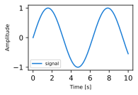
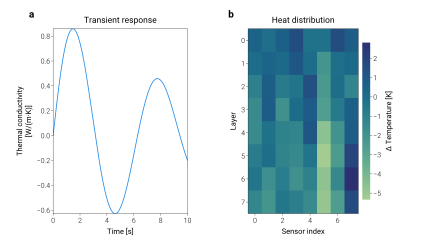
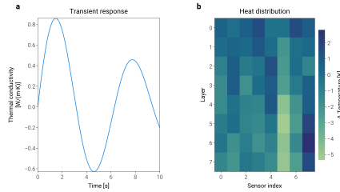
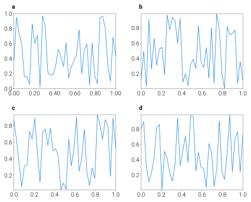
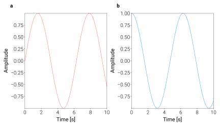
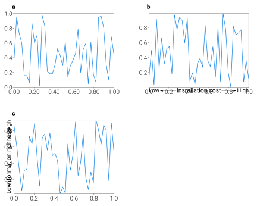
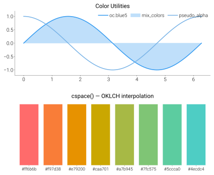
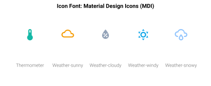
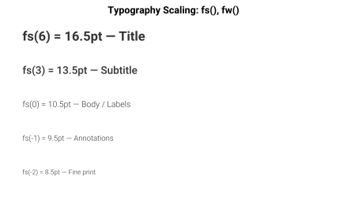

SVG Per-Plot Size Tuning Preview
usage_guide/
compare_before.svg 9×6

compare_after.svg 7.5×5

layout_tight.svg (tight_layout)
9×5 ↑

layout_simple.svg (simple_layout)
9×5 ↑

layout_gridspec.svg (2×2) 9×7 ↑

quickstart_multi_panel.svg (1×2) 9×5

api/
layout_example.svg 1×3→2×2, 9×7

color_example.svg 9×7 ↑

icon_example.svg 9×3.5 ↑

font_example.svg 9×5.5 ↑

color_system/
color_space_creation.svg
3col→2col, 9×8

color_space_conversion.svg
4col→2×2, 9×4

color_space_interpolation.svg 9×5.8

color_space_colormap.svg 9×5.8